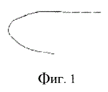
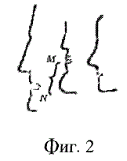

Беседа 2159 от 3877 · Беинса Дуно
Влиянието на музиката
„Добрата молитва"
Ще прочета няколко стиха от 14 глава на Притчи, от 23 стих нататък.
Колко източника има за страданията на човека? От колко места произтичат човешките страдания? Всички ние сте опитали страданията, произходът им. Гладният ли страда повече или ситият?

За да дадете каквато и да е линия, трябва да дадете линия на езика си. Може да изучавате човешкия език. Вие не сте изучавали езиците на добрите хора и на лошите хора. Вие не сте изучавали езика на един музикант и на един обикновен човек. Не сте изучавали езика на поета, на философа, на светията. Различават се. Ти не може да бъдеш светия и да имаш най-простия език. Ако езикът ти е прост и ти ще бъдеш прост. Ти не може да бъдеш учен човек, ако езикът ти е прост. Ако ви дам една греда, голяма греда, да кажем от 100 килограма, едно дебело дърво, какво бихте направили от това дърво? Ако бих ви дал задача да направите писалка, какво бихте направили? И как бихте я направили? Каква тежест трябва да има езикът? На един добър човек езикът е определен. Съвременните моралисти не знаят колко тежи човешкият език. Може би и в бъдеще, като умре един праведен и като умре един грешник, да им претеглят езиците. Или на някой поет. Но все таки отде ще може да определите колко тежи езикът? От говора може да определите тежестта на езика.
Например какво подразбирате вие под думите „тежка дума"? Нали някои от вас сте опитвали тежките думи. Някой път като ви кажат някоя дума, падне ви на слънчевия възел, мине се ден, два и ви е тежко. Казвате: „Много тежко ми стана." Но не сте изучавали, да кажем, че известна мисъл е минала през вашето ухо и е възприета, и е предадена през ред мозъчни центрове, минала през много работи и се е спряла при слънчевия възел. Една тежка дума, която ви тежи, как я махвате? Правили ли сте наблюдение защо ви е тежко, като ви обидят? И как ви минава?

Вие сега искате да преустроите вашия живот. Във вашето съдружие вие искате да живеете един щастлив, един разумен живот. В какво седи щастието на човека? Щастието на човека от чисто физическо гледище зависи от следното. - Когато храната се възприма и се смила добре, когато въздухът чрез дробовете се приема добре и когато кръвообращението става правилно, няма никакво противоречие. Това е едно здравословно състояние. Но къде е дефектът на този човек? Има ли той някакъв дефект? В какво направление трябва да се турят очите, ушите? Между тези две лица (последните две) в какво седи разликата? Вторият върви по мъжка линия, а третият по женска линия. Крива е линията в третия. А е права във втория. Той има доста честолюбие. Първата фигура е недоизработена. В живота има много хора недоизработени. Много лица има недоизработени. Не харесваш лицето си, не е доизработено, трябва да се работи. Трябва да работиш на физическото поле, в мисълта си, в чувствата си, трябват големи усилия. При първия брадата е по-издадена, от нея може да се съди как е устроена задната част.
Много пъти човек прави различие, но се съмнява дали е прав или не. Когато прави различие, той трябва да знае, дали е прав или не. Тази кривина по долната устна е другояче устроена в двете рисунки. Всички тези тънкости показват цял един свят за онзи, който разбира. Малката кривина в този случай е от голяма важност. Ако вие направите една малка корекция на вашата уста, вие ще направите цял преврат във вашия умствен свят. Защото вашите вежди, уши, уста са резултат на хиляди векове. Ако направите една малка корекция в това, вие имате разбиране. Най-мъчно се правят корекции в човешкото лице. Но всеки един от вас може да направи корекция. Например вие седите някой път и не знаете какъв ъгъл, какъв наклон да дадете на очите си. Някой път си мърдате очите нагоре и надолу, без да знаете, че си създавате цяло нещастие. Човек с мърдането на очите прилича на малкото дете, което, като му дадеш едно яйце, го чука докато го счупи. Вие мърдате очите си нагоре, надолу, докато счупите нещо. Не е въпрос само човек да движи очите си. Човек поглежда нагоре, надолу с очите си и какво постига? Не трябва да се правят глупави работи. Един български свещеник купил две кошници яйца, за да ги вапсат за Великден. 200 яйца - по 100 яйца във всяка кошница. Той искал да си избере едно кораво яйце и счупил всичките яйца в кошницата. Намерил едно яйце. След това и в другата кошница счупил всичките яйца. Най-поел е останали две яйца и едното от тях счупил, и на бореца задницата му и тя се счупила. Като удряш едно яйце с друго, нищо не се постига. Кой е истинският начин, за да познаете, че едно яйце е яко. Има ли начин? Якото яйце е ръбесто яйце, като го попипате, но трябват известни наблюдения.
Та казвам: Когато разглеждате изкуството, може по същия начин да си преведете музикалните тонове. Вие не сте правили наблюдения в музикална зала, когато се свири, какво впечатление се прави на слушателите. По тоновете, които се свирят, по тяхното влияние се създават известни движения на очите на слушателите. Защото всеки тон, който прониква във въздуха, може да повлияе по един или по друг начин. Вие не знаете начина. Ако се произнесе, ако изпеете до, какво ще произведе?
(Учителя пее до.) Това до правилно ли е? Музикантите да кажат това до правилно ли е? Или вземете до, ми. Или ре, фа или ми, сол. Терца имате. Или ако вземете до, фа, вие ще произведете различен резултат. Ако вземете до, сол, ще произведете друг резултат. Вие не сте правили такива опити за самовъзпитанието. В музиката какво влияние имат тези работи. Терците за какво ги употребяват? Някои песни започват с терца. Например някоя песен започва с до. От до минава в ми. Или във фа. Ако построим една песен в терца, какъв ще бъде резултатът? Те са специални работи. Най-първо трябва да се приеме философията, че музикалният живот е живот на движението. Музикалният живот внася известна мекота. Без музика животът не може да се омекоти. Той е корав. Всички същества, които не са музикални, са много жестоки. Проявлението на музиката в живота е вече едно омекотяване на онези първични сили, които са действували. Под думата музика ние всякога разбираме едно омекотяване на човешките чувства, едно малко омекотяване.
Има същества, на които животът е започнал с червените лъчи. Това е до. Има някои същества, чийто живот е започнал с портокалените лъчи. На някой е започнал със зелените лъчи. Има някои същества, чийто живот е започнал с жълтите лъчи или със сините лъчи. Всеки лъч е зачатък на известен живот. Значи животът, който започва с червените лъчи, има напор само отвътре. Той е едно движение в кръг. Червените лъчи са едно движение в кръг, от което човек иска да излезе и да вземе известна посока, а пък ре е движение в права посока. Но ако човек не разбира закона там, той може да има катастрофа. Там движението е силно и ако не сте внимателни, то може да се сблъскате, може да стане катастрофа. Когато слизате от високо място, трябва да имате много спирачки.
Та казвам: Музикант, който разбира донякъде философия, може да изрази едно интензивно чувство във възходяща или низходяща степен; да изрази едно движение, което излиза нагоре по планината. Искаш да изразиш нещо във възходяща степен - ще се качиш нагоре. Там трябва да махнеш всички спирачки. Там ре-то е на място. Ще го туриш, то е един подтик.
Но дойдат чувствата в низходяща степен, трябва да се слезе, защото това, което излиза, то трябва да слезе. Това аз ви привеждам за обяснение. Музиката трябва да служи в живота като едно възпитателно средство. За да се самовъзпитате, за да произведете някакъв ефект, вие непременно трябва да си наложите да пеете. Някой път си неразположен, потананикай си нещо криво-ляво, колкото знаеш. Може да пееш с много погрешки. В пеенето няма погрешки. Както и да пеете, е правилно. Кривото седи само в това, че когато минаваш от една гама в друга, смесваш гамите и тогава е дисхармонията. Но в живота има много гами. И най-дисхармоничното пеене е хармонично. Зависи как го разглеждаш. (Учителя пее: Ха, хи, хе.) Това е хармонично. Понеже се минава правилно от една гама в друга. На вас ви се вижда дисхар-монично. Смесване има на отделни тонове. Тонът е дис-хармоничен, понеже е в дисхармония с други тонове, но сам по себе си този тон, като го вземеш, той представлява ценност.
Та казвам: Еди-кой си не пее правилно. Тук подразбираме тонове по отношение на други тонове. Когато се намирате пред музикант, той най-първо трябва да пее пред вас. Ако вие пеете, той трябва да ви коригира. (Учителя пее тона до.) Прав ли е този тон? Ако вземем този тон за основа, какво ще бъде? Всички пейте. (Всички пеем следните тонове: до, ми, сол.) Сега как ще коригираме? Виждам, че този тон е по-висок, трябва да се снеме. Как ще намерим правилното отношение на основния тон? Най-малкият усет, който имате в дадения случай, това е до. Това е първият усет. Най-малкото трептене, което може да схванете, това е до. Това е един подтик, философски казано, за музиката. Що е основният тон? Най-малкият усет, който може да имате в дадения случай. Следователно музиката е едно моделиране на онази първична сила. Най-малкият усет, с който може да моделирате известна сила, това е основният тон, с който може да работите. Някой път може да се спра върху това. Трябва да знаете, когато се разгневи един човек, да му изпеете известни тонове и веднага да утихне. Но трябва да знаете кои тонове да съчетаете и как да ги съчетаете.
„Отче наш"
30 лекция от Учителя, държана на 11 май 1934 г., София, Изгрев.